第二讲：环境安装与引擎配置
课程讲义 · 网页教材
授课人： 张晨（西北农林科技大学经济管理学院）
第 2 次课 | 2 课时（90 分钟） | 2026 年夏季学期
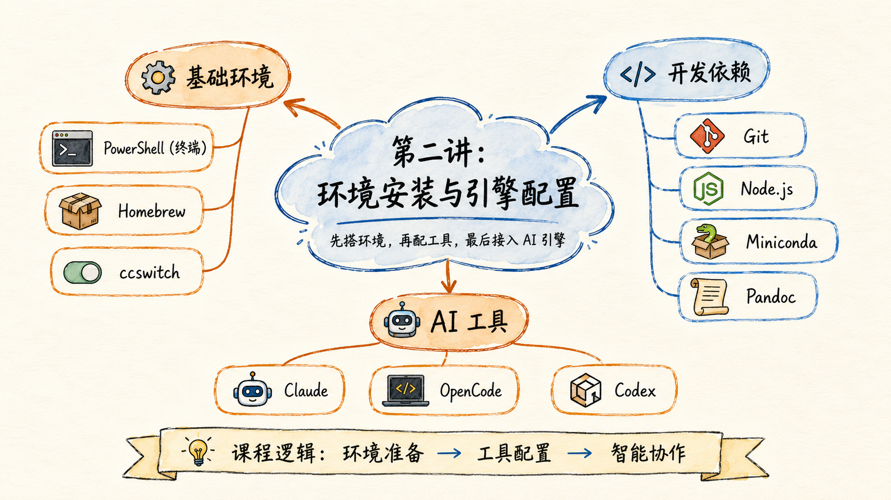
本次教学目标
完成本次课后，你应该能够：
- 按正确顺序在 Windows 或 Mac 上完成 AI 工具链的完整安装
- 使用验证命令确认每项工具的安装是否成功
- 理解每一款工具的「角色」——它在这个链条里承担什么功能、为什么必须装
- 独立完成 VS Code 工作区的建立和导航
- 在 OpenCode 中安装 Skills 扩展包、配置 API、切换三种工作模式
- 完成 Claude Code 的首次设置，理解它与 OpenCode 的互补关系
课前说明
本讲是整个课程中「动手密度最高」的一讲。上节课你知道了 AI 能做什么、有什么缺陷、为什么需要 Agent。这节课把这些认知变成能工作的工具链。
讲课节奏：
- 上节（45 分钟）：环境安装讲解 + 同步演示。Windows 和 Mac 分别讲，但核心逻辑相同
- 下节（45 分钟）：AI 引擎配置。先 VS Code 工作区，再 OpenCode，最后 Claude Code
安装前的心理预期：
- 安装过程本身大约需要 20-40 分钟（取决于网速）
- 如果在课堂上同步安装，请跟随讲师的节奏，一步装完验证通过再走下一步
- 遇到卡顿时不要慌——80% 的安装问题都与网络有关，切换国内镜像通常能解决
- 每装完一个工具，立刻运行验证命令。不要全部装完再统一验证——出错了找不到具体是哪一步的问题
上节：环境安装——让 AI 进入你的电脑
上节时长建议：45 分钟。重点是理解安装顺序背后的逻辑，以及每款工具的「角色」。
2.0 安装前的理解
为什么要装这些？
我们课程的目标是让 AI 能进入你的本地工作流——读你的文件、改你的代码、处理你的数据、转换你的文档格式。为此，你的电脑需要一些「基础设施」。在动手之前，先理解每款工具的「角色」：
| 工具 | 角色 | 一句话理解 | 如果不装会怎样 |
|---|---|---|---|
| 命令行（PowerShell / 终端） | 发指令的窗口 | 所有操作的总控台 | 无法运行后续任何命令 |
| VS Code | 编辑器 + 项目管理平台 | 看文件、改代码、跑 AI 的地方 | 只能看终端黑窗口，无法直观管理项目 |
| Git | 版本存档系统 | 像游戏存档——AI 改错了能回退 | AI 改坏了文件无法一键恢复 |
| Node.js | AI 工具运行环境 | Claude Code 和 OpenCode 都跑在它上面 | 两个核心 AI 工具都无法安装 |
| OpenCode | 命令行 AI 助手 | 终端里的免费 AI Copilot | 没有免费可用的本地 AI 助手 |
| Claude Code | 自主 AI Agent | 最强大的编程 Agent | 没有能自主完成复杂任务的 AI |
| Miniconda | Python 环境管理器 | 不同项目的包互不干扰 | 装包冲突时焦头烂额 |
| Pandoc | 文档格式转换器 | Markdown ↔︎ Word ↔︎ PDF | AI 写的 Markdown 只能手动排版 |
核心原则
你装这些软件不是为了学编程，而是为了让 AI 有能力直接在本地干活。 每装一个工具，你都应该知道它在整个链条里的角色。装完了不知道这个东西是干什么的——等于没装。
2.1 安装顺序（重要！）
为什么顺序重要？因为安装程序会互相检测——前一步装好了，后一步自动识别，省去手动配置的麻烦。
Windows 安装顺序
① PowerShell 权限 → ② VS Code → ③ Git → ④ Node.js → ⑤ OpenCode → ⑥ Claude Code → ⑦ Miniconda → ⑧ Pandoc为什么 VS Code 在 Git 前面？ Git 安装时会询问「默认编辑器选哪个？」——如果 VS Code 已经装好，安装程序会自动检测到它，直接选「Use Visual Studio Code as Git’s default editor」即可。如果顺序反了，后续需要手动改 Git 配置。
Mac 安装顺序
① 终端 → ② Xcode 命令行工具 → ③ Homebrew → ④ VS Code → ⑤ Git / Node.js / OpenCode / Pandoc（一行搞定） → ⑥ Claude Code → ⑦ MinicondaMac 的核心是先装 Homebrew（命令行里的应用商店），之后大部分工具一行命令搞定。这和 Windows 逐个下载安装包的方式完全不同。
2.2 Windows 环境配置
A. PowerShell：权限设置
PowerShell 是 Windows 内置的命令行工具。后续几乎所有操作都在这里完成——装软件、输命令、验证安装、启动 AI。
打开方式： 按 Win 键 → 输入 PowerShell → 回车。
首先要设置脚本执行权限（Windows 默认不让你随便运行脚本）：
Set-ExecutionPolicy RemoteSigned -Scope CurrentUser看到提示后输入 Y 确认。这条命令只对当前用户生效，不影响系统安全策略。
B. VS Code：编辑器安装
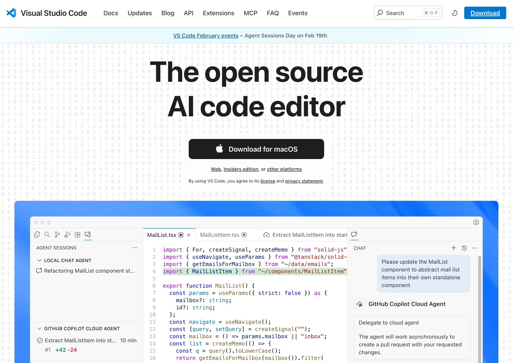
VS Code 是整个工作台的核心——你看文件、改代码、终端面板跑 AI，全在这个窗口里完成。装完它，你才算有了「工作台」。
安装步骤：
- 打开 https://code.visualstudio.com/，下载 Windows 版
- 运行安装程序，接受许可协议
- 安装选项——下面两项必须勾选：
- 「添加到 PATH」——勾选后，在终端输入
code就能启动 VS Code - 「通过 Code 打开」右键菜单——勾选后，右键任意文件夹都能「用 VS Code 打开」
- 「添加到 PATH」——勾选后，在终端输入
- 其余保持默认，完成安装
验证： 打开 PowerShell 或 cmd，输入：
code --version看到版本号信息（如 1.106.0）即安装成功。同时 VS Code 窗口应该能正常打开。
安装完成后强烈建议在 VS Code 中安装「Chinese (Simplified) Language Pack」扩展——界面变成中文，后续操作更直观。
C. Git：版本控制
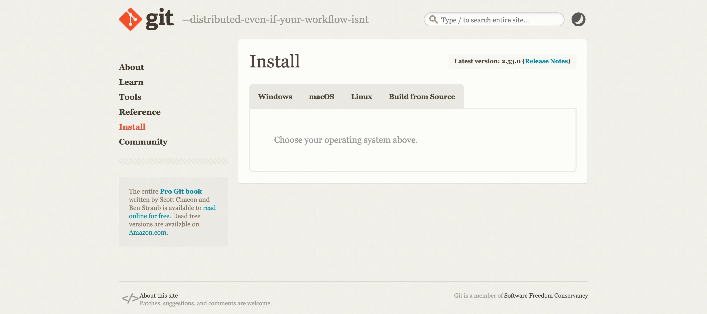
Git 是 AI 修改文件时的「安全网」。AI 改你的代码之前，你用 Git 存一次档——改坏了，一键回退到改之前的状态。相当于游戏里的「存档 / 读档」，但用于研究文件。
安装步骤：
- 打开 https://git-scm.com/，下载 Windows 版（Standalone Installer, 64-bit）
- 运行安装程序，前几页保持默认
- 在「Select Components」页面，勾选 「Add a Git Bash Profile to Windows Terminal」
- 关键步骤： 在「Choosing the default editor」页面，确认选中 「Use Visual Studio Code as Git’s default editor」——正因为前面先装了 VS Code，这里才会自动出现这个选项
- 在「Adjusting your PATH environment」页面，选择 「Git from the command line and also from 3rd-party software」（第二个选项）
- 其余页面全部保持默认，一路 Next 到安装完成
验证：
git --version配置身份（替换为你的姓名和邮箱）：
git config --global user.name "张三"
git config --global user.email "zhangsan@nwafu.edu.cn"验证配置是否生效：
git config --global --list应该看到两行输出：user.name=张三 和 user.email=zhangsan@nwafu.edu.cn。
Git 和 GitHub 不是一回事。Git 是版本控制工具（你的电脑上），GitHub 是代码托管网站（云端）。就像 Word 是写文档的工具，知网是存文档的网站——两个东西，各司其职。
D. Node.js：AI 工具的运行环境
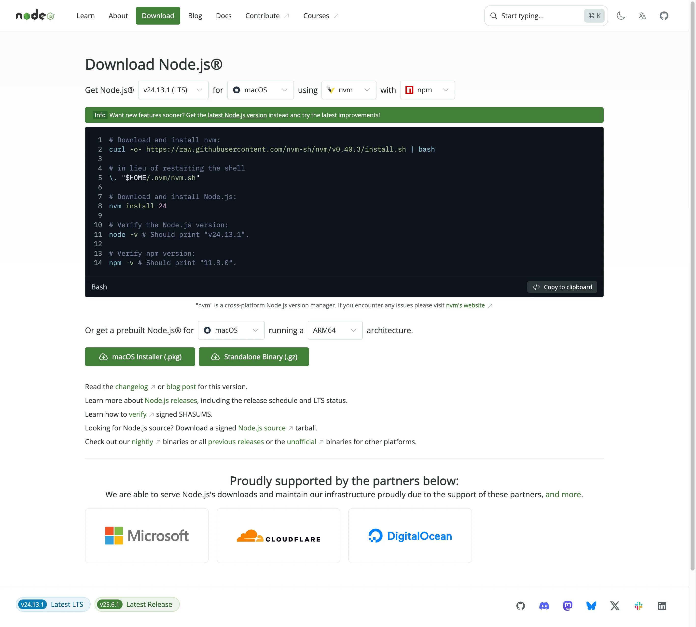
Node.js 是 OpenCode、Claude Code 等工具的底层运行平台。它本身你没有直接感知——你感知到的是跑在它上面的 Claude Code 和 OpenCode——但没有它，后面什么都装不了。
安装步骤：
- 打开 https://nodejs.org/，下载 LTS 版本（长期支持版，更稳定，不要下 Current 版）
- 运行
.msi安装包，保持默认安装路径 - 确认 「Add to PATH」 已勾选（通常是默认勾选的）
- 完成安装
验证：
node --version
npm --version两条命令都显示版本号即成功。npm 是 Node.js 自带的包管理器——后面用它来安装 OpenCode 和 Claude Code。
E. OpenCode：命令行 AI 助手
在 PowerShell 中执行一行命令即可：
npm install -g opencode-ai-g 表示全局安装——装完后在任何目录都能用 opencode 命令启动。
如果下载很慢（校园网常见），指定国内镜像：
npm install -g opencode-ai --registry=https://registry.npmmirror.com
验证：
opencode --versionF. Claude Code：自主 AI Agent
同样一行命令，使用国内镜像加速：
npm install -g @anthropic-ai/claude-code --registry=https://registry.npmmirror.com如果网络条件好，也可直接用官方源：
npm install -g @anthropic-ai/claude-code验证：
claude --versionOpenCode 和 Claude Code 二选一即可，也可以两个都装。两者共用同一套 Skills 扩展包，生态高度重叠，迁移成本几乎为零。建议两个都装——OpenCode 免费模型用于日常轻任务，Claude Code + API 用于重任务，各有场景。
G. Miniconda：Python 环境
Miniconda 管理你的 Python 环境——不同项目可以用不同版本的 Python 和不同的包，互不干扰。这对长期科研很重要：做文本分析的包和做因果推断的包可能有冲突，用 Miniconda 创建隔离环境，切换项目时不用担心包打架。
安装步骤：
- 打开 https://docs.anaconda.com/miniconda/，下载 Windows 版
- 运行安装程序
- 关键：不勾选「Add Miniconda3 to my PATH environment variable」（防止环境变量污染）
- 可以勾选「Register Miniconda3 as my default Python」
- 完成安装后，在 PowerShell 中初始化：
conda init powershell- 关闭并重新打开 PowerShell，验证：
conda --version为什么不用普通 Python？Miniconda 可以创建隔离环境——项目 A 用 Python 3.10 + pandas 1.5，项目 B 用 Python 3.12 + pandas 2.2，互不干扰。直接用普通 Python 的话，包版本冲突会让你生不如死。
H. Pandoc：文档格式转换
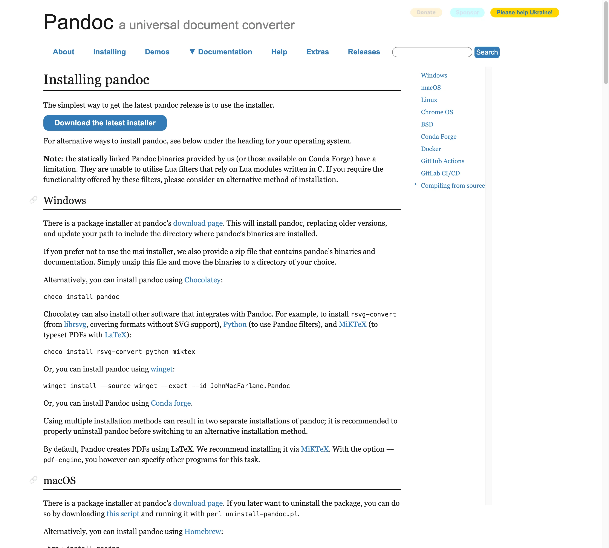
Pandoc 是格式转换的「瑞士军刀」。AI 写 Markdown，你一键转成 Word 发给导师、转成 PDF 投稿。不需要打开 Word 排版——一行命令完成格式迁移。
安装步骤：
- 打开 https://pandoc.org/installing.html，下载 Windows
.msi - 默认安装即可，一路 Next
- 验证：
pandoc --versionWindows 安装完成检查清单
全部装完后，在 PowerShell 中依次运行以下命令。每一条都应显示版本号——任何一条没有版本号而显示「command not found」，说明那一步安装失败，需要回头排查。
code --version
git --version
git config --global user.name
node --version
npm --version
opencode --version
claude --version
conda --version
pandoc --version2.3 Mac 环境配置
Mac 安装的核心思路
Mac 的安装哲学和 Windows 完全不同：先装 Homebrew，然后一行命令搞定几乎所有工具。 Homebrew 是 Mac 下的包管理器，相当于「命令行里的 App Store」。装好 Homebrew 之后，大部分操作变成「复制、粘贴、回车」——不需要逐个访问官网、下载安装包、双击安装。
A. 终端：认识与基本操作
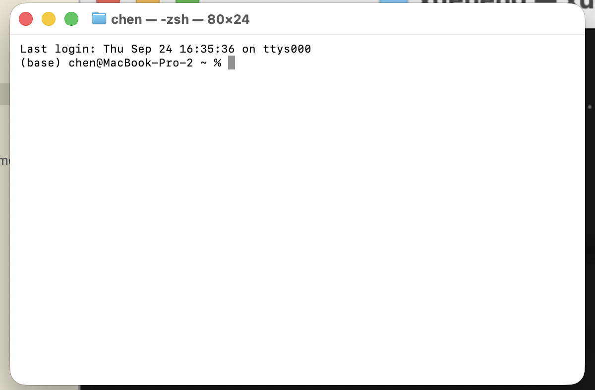
打开方式： Command（⌘）+ 空格，输入 Terminal 或 终端，回车。
打开后你会看到类似这样的提示符：
zhangsan@MacBook-Pro ~ %~表示你当前在「家目录」（你的用户文件夹）%后面就是你可以输入命令的地方
基本操作只有一个：复制命令 → 在终端粘贴 → 回车执行。如果要中断正在运行的命令，按 Ctrl + C。
B. Xcode 命令行工具
这是 Mac 整个开发环境的地基。在终端执行：
xcode-select --install弹出窗口后点击「安装」，等待几分钟即可。这一步不成功，后面的工具很难装。
C. Homebrew：Mac 的灵魂
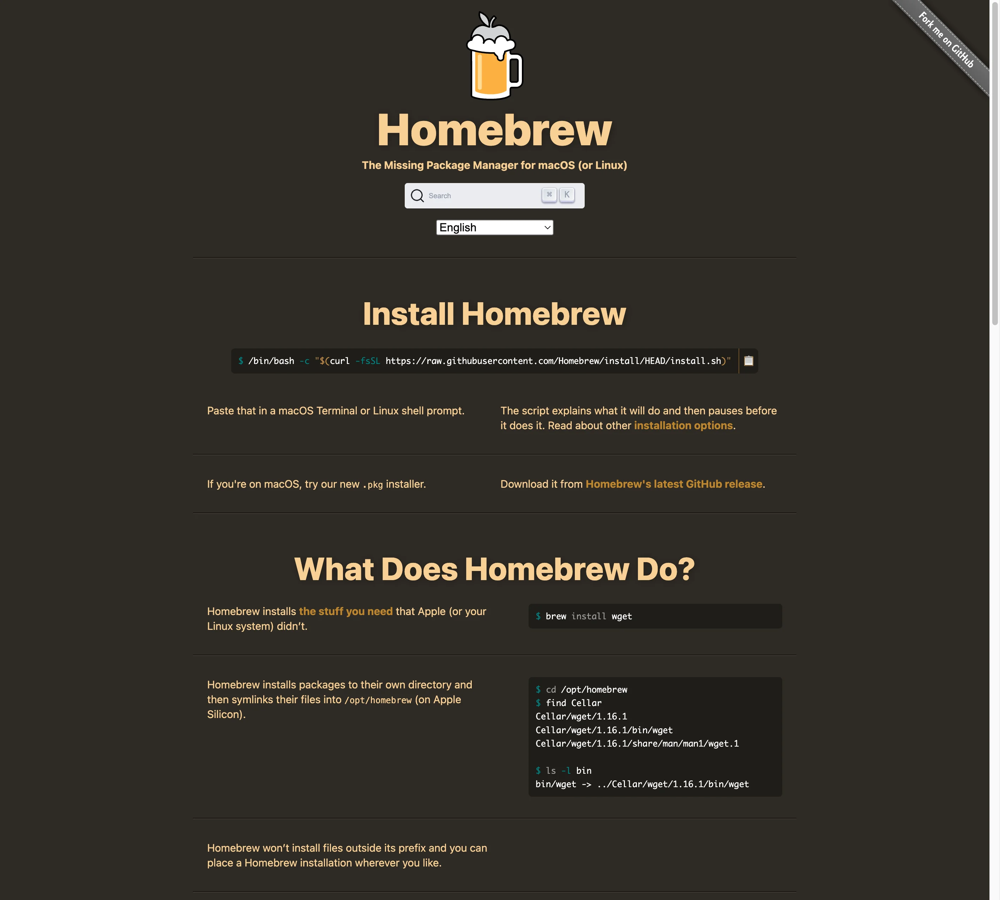
Homebrew 是 Mac 下的包管理器——终端里输入 brew install 软件名，一行命令搞定安装。不需要打开浏览器、不需要下载 .dmg、不需要拖拽到 Applications。
安装命令（官方源）：
/bin/bash -c "$(curl -fsSL https://raw.githubusercontent.com/Homebrew/install/HEAD/install.sh)"如果是 Apple Silicon（M1/M2/M3/M4）芯片的 Mac，安装完成后需要额外执行两行（分两次运行）：
echo 'eval "$(/opt/homebrew/bin/brew shellenv)"' >> ~/.zprofile source ~/.zprofile
验证：
brew --version如果官方命令因网络问题失败（校园网访问 GitHub 不稳定是常态），切换清华大学镜像源：
export HOMEBREW_BREW_GIT_REMOTE="https://mirrors.tuna.tsinghua.edu.cn/git/homebrew/brew.git" export HOMEBREW_CORE_GIT_REMOTE="https://mirrors.tuna.tsinghua.edu.cn/git/homebrew/homebrew-core.git" export HOMEBREW_INSTALL_FROM_API=1 export HOMEBREW_API_DOMAIN="https://mirrors.tuna.tsinghua.edu.cn/homebrew-bottles/api" export HOMEBREW_BOTTLE_DOMAIN="https://mirrors.tuna.tsinghua.edu.cn/homebrew-bottles" git clone --depth=1 https://mirrors.tuna.tsinghua.edu.cn/git/homebrew/install.git brew-install /bin/bash brew-install/install.sh rm -rf brew-install教学提示：优先尝试官方安装命令。如果失败，再使用清华镜像。不建议一开始就混用多种方式。
D. VS Code
brew install --cask visual-studio-code也可以从 https://code.visualstudio.com/ 下载 Mac 版手动安装。验证：
code --versionE. 一键安装主力工具
Homebrew 装好后，一行命令搞定 Git、Node.js、OpenCode、Pandoc：
brew install git node pandoc anomalyco/tap/opencode
brew install --cask claude-code这几行一气呵成——没有「下载→双击→下一步→下一步」的逐个循环。这就是 Mac + Homebrew 的效率。
逐一验证：
git --version
node --version
npm --version
opencode --version
claude --version
pandoc --versionF. Git 身份配置
与 Windows 完全相同：
git config --global user.name "张三"
git config --global user.email "zhangsan@nwafu.edu.cn"G. Miniconda：Python 环境
brew install --cask miniconda安装后初始化：
conda init zsh关闭并重新打开终端，验证：
conda --versionMac 安装完成检查清单
code --version
git --version
git config --global user.name
node --version
npm --version
opencode --version
claude --version
conda --version
pandoc --version每一条都应显示版本号。完成后，基础环境搭建完毕。
安装故障排查速查表
| 症状 | 可能的原因 | 解决方案 |
|---|---|---|
npm install 超时或极慢 |
网络访问 npm 官方源慢 | 加--registry=https://registry.npmmirror.com |
brew install 失败 |
GitHub 访问不稳定 | 切换清华镜像（见 2.3.C 节） |
conda 命令未被识别 |
未初始化或未重启终端 | 运行conda init 后关闭并重新打开终端 |
code 命令未被识别 |
VS Code 安装时未勾选「添加到 PATH」 | 重新运行 VS Code 安装程序，勾选该选项；或手动添加到 PATH |
| Claude Code 启动报错 | 缺少 API Key 配置 | 下节会讲 CC Switch 配置，暂时不用管 |
下节：AI 引擎配置——让 AI 真正跑起来
下节时长建议：45 分钟。重点是 VS Code 工作区建立和 OpenCode 的 Skills 安装 + API 配置。
3.1 配置 VS Code 工作区
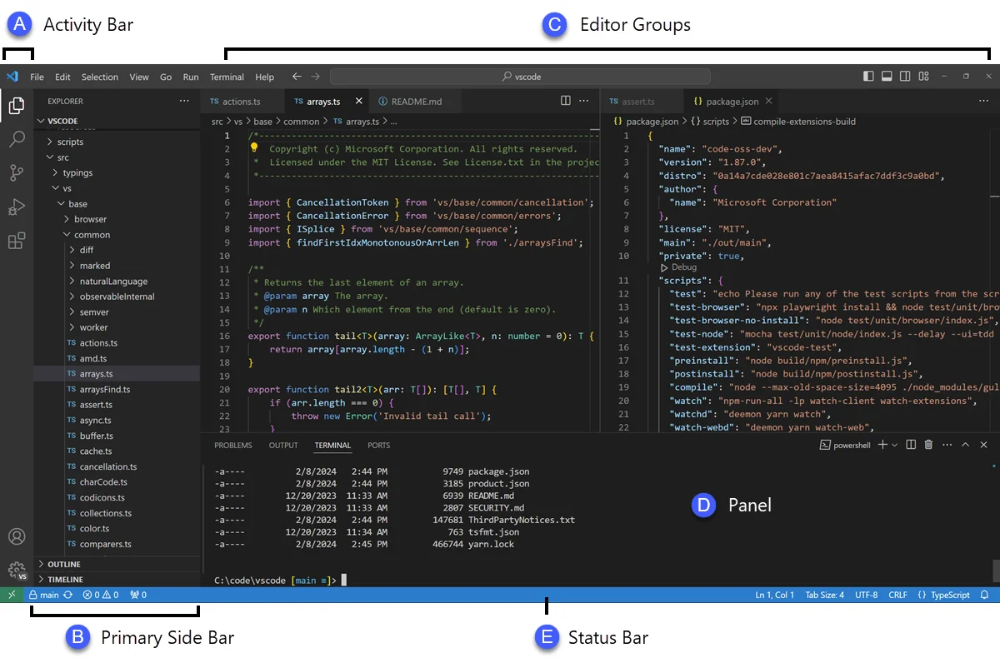
VS Code 是你的「数字工作台」。装好了编辑器，接下来要把它配置成一个适合 AI 研究的工作环境。
建立第一个项目文件夹
在你习惯的位置创建一个项目文件夹。推荐放在桌面或用户目录下，方便访问：
桌面 / ai-lab /打开 VS Code → File → Open Folder → 选择刚才创建的
ai-lab文件夹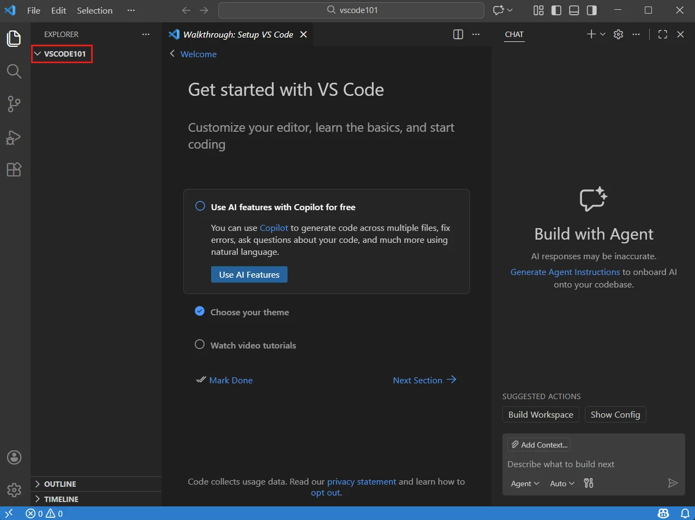
VS Code 打开文件夹
认识五个关键区域
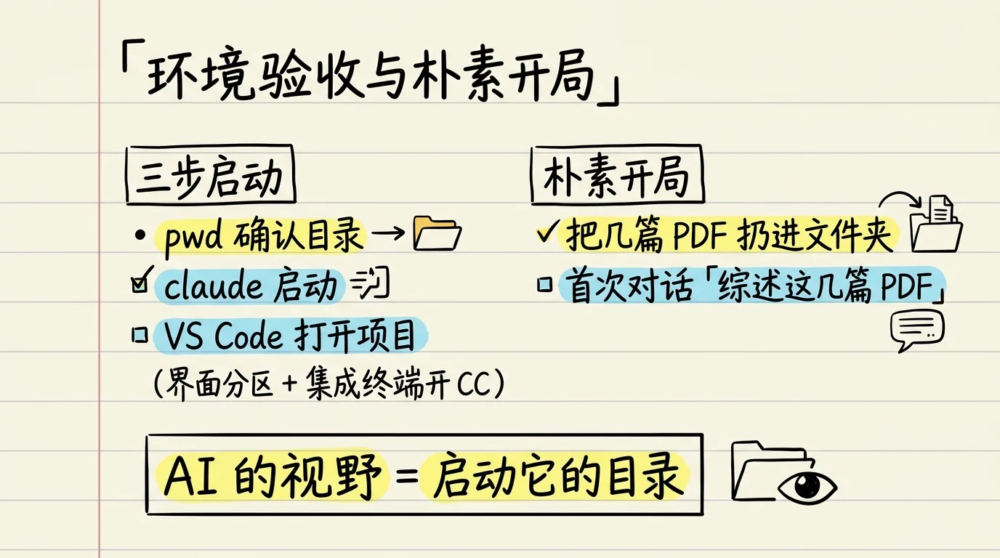
| 区域 | 位置 | 功能 | 常用操作 |
|---|---|---|---|
| 活动栏 | 最左侧竖栏 | 切换不同功能面板 | 文件、搜索、Git、扩展、Claude Code 入口 |
| 侧边栏 | 活动栏右侧 | 显示当前功能的详细内容 | 文件目录树、搜索结果列表、Git 变更记录 |
| 编辑区 | 中央大面积 | 查看和编辑文件 | 打开 .do / .py / .md / .tex 文件 |
| 面板 | 底部 | 终端就在这里 | Ctrl+J（Win）/ Cmd+J（Mac）打开或关闭 |
| 状态栏 | 最底部一行 | 当前文件信息 | 文件编码、行号、Git 分支名 |
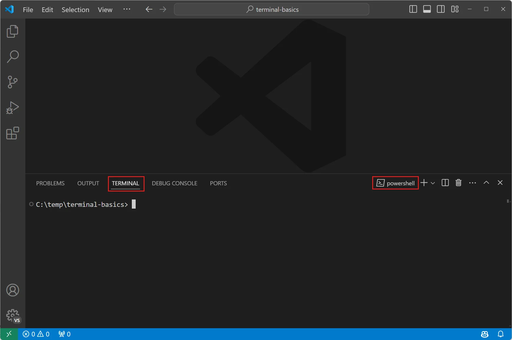
核心工作模式
编辑区看文件 + 终端面板跑 AI。 左边改代码，右边 AI 在工作——一个窗口完成所有操作。这是你以后最频繁使用的界面布局。
推荐安装的扩展
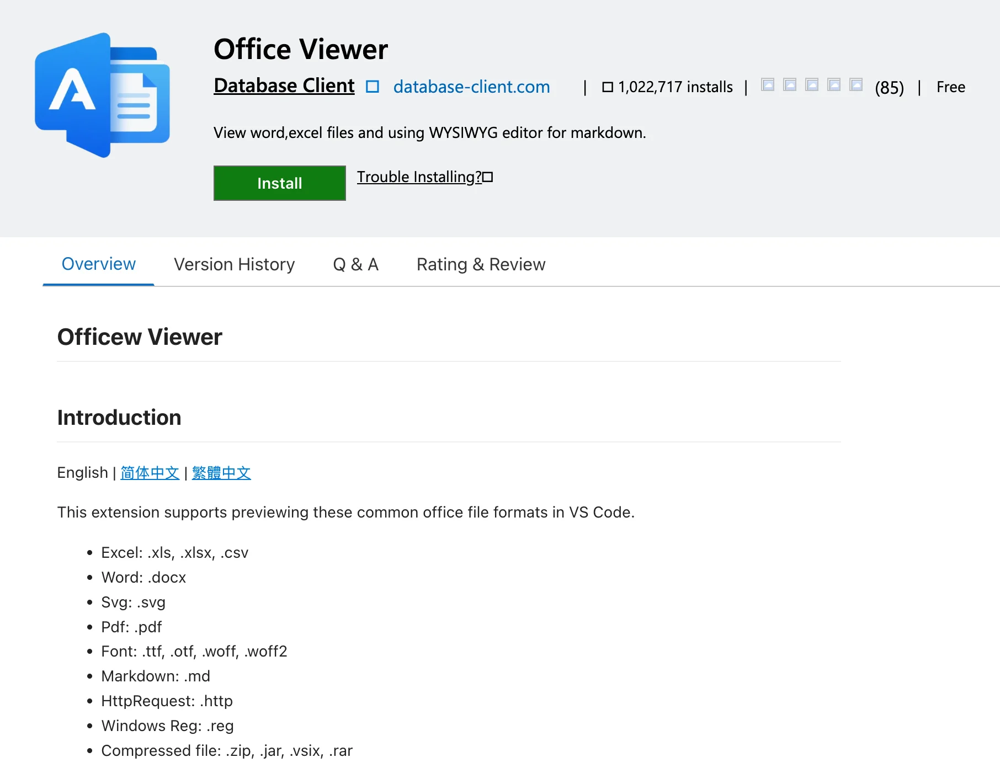
点击活动栏的「扩展」图标（或按 Ctrl+Shift+X），搜索并安装以下扩展：
| 扩展名 | 用途 | 为什么推荐 |
|---|---|---|
| Claude Code for VS Code（Anthropic 官方） | 在 VS Code 侧边栏直接使用 Claude Code | 不用切到终端，在编辑器里就能调用 AI |
| Office Viewer | 在 VS Code 中预览 Markdown、PDF | AI 生成的 Markdown 可以实时预览效果 |
| Git Graph | 可视化 Git 提交历史 | 看到每次修改的时间和内容，回退更方便 |
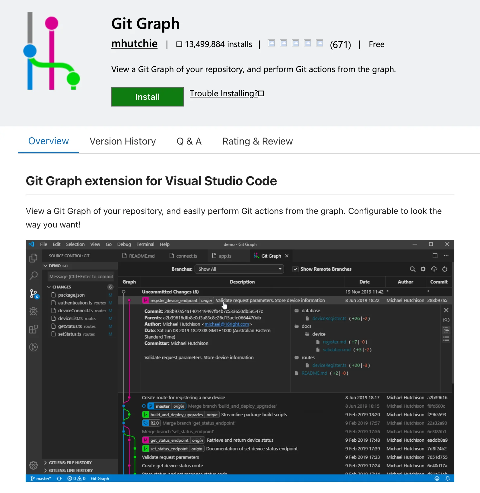
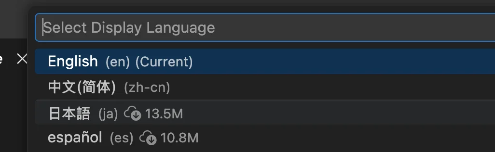
3.2 OpenCode 配置
OpenCode 在上一节已经通过 npm 安装好了。本节做三件事：装 Skills 扩展包、配 API、学三种工作模式。
安装 Skills 扩展包
Skills 是 OpenCode 的「专业工具包」——装了它，AI 不只是能聊天，还能读 PDF、转 Word、处理 Excel、生成 PPT、搜索文献。没有 Skills 的 AI = 只有通用知识的人；加了 Skills 的 AI = 配齐工具箱的专业人士。
安装方法（最简单）：
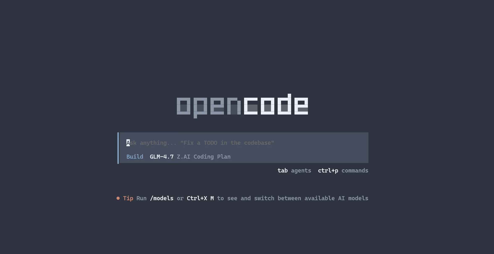
在 VS Code 终端或独立终端中输入 opencode 启动 OpenCode，然后在对话中输入以下自然语言指令：
请帮我从 GitHub 下载并安装 Skills 扩展包。步骤如下：
1. 克隆仓库 https://github.com/Xueheng-Li/ai-tools-installation.git 到临时目录
2. 将仓库中 recommended_skills 文件夹下的所有子文件夹复制到 ~/.config/opencode/skills/
3. 完成后删除临时目录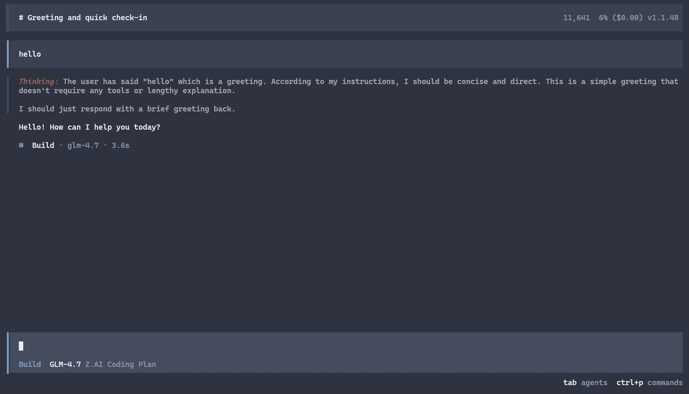
OpenCode 会自动执行 git clone → 文件复制 → 清理临时目录。整个过程大约 1-2 分钟。
验证安装： 输入 /skills，如果看到 arxiv、docx、pdf、pptx、xlsx、web-research 等约 15 个技能，说明安装成功。
选择模型与配置 API
OpenCode 内置了免费模型（GLM-5 Free 等），课堂演示可以直接使用，不需要任何配置。
使用免费模型：
输入
/models查看可用模型列表选择一个带
Free标识的模型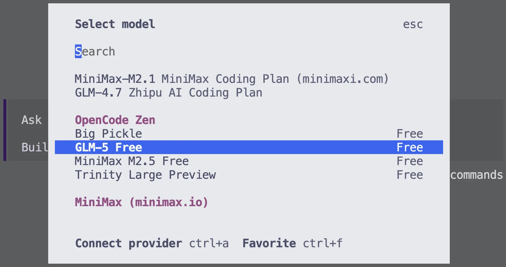
选择免费模型
配置付费 API（推荐用于长期使用）：
免费模型适合日常轻任务。做重的数据分析、深度代码推理时，付费 API 表现显著更好。以 DeepSeek 为例：
访问 platform.deepseek.com，注册账号
在「API 密钥管理」点击创建 Key，复制后立即妥善保存——Key 只显示一次，关闭页面后再也看不到
回到 OpenCode，输入
/connect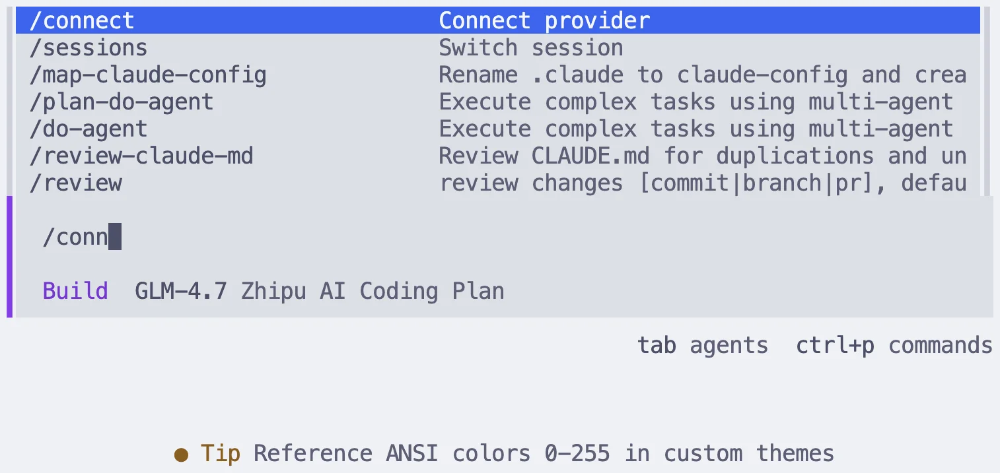
连接服务商 选择 DeepSeek provider
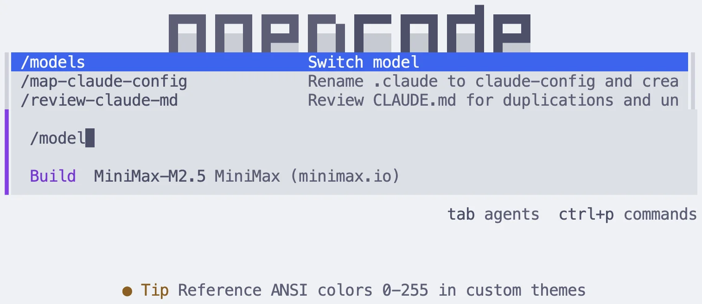
选择模型 粘贴 API Key
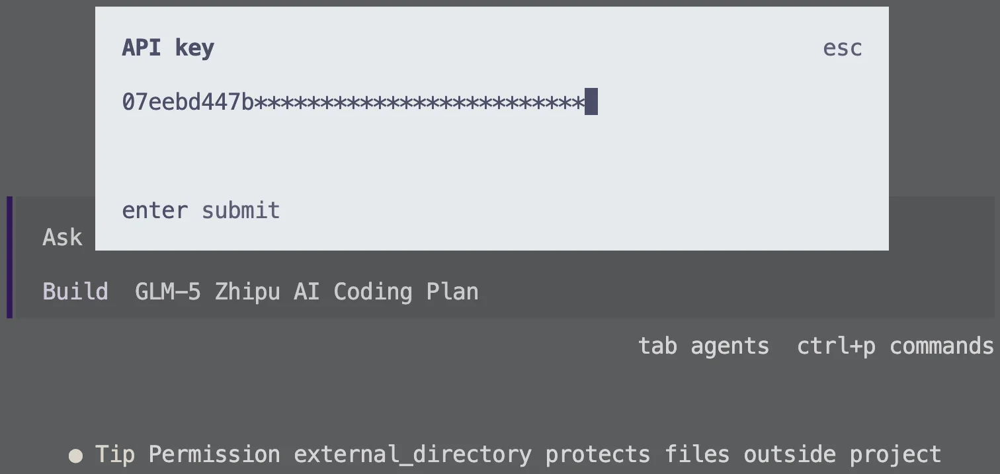
输入 API Key 输入
/models，选择 DeepSeek 模型即可开始使用
其他可选平台（配置逻辑完全相同：「注册 → 获取 Key → /connect → 贴 Key → 选模型」）：
| 平台 | 网址 | 优势 |
|---|---|---|
| 智谱 AI | bigmodel.cn | 中文强，免费额度大 |
| Kimi | kimi.com/coding | 超长上下文 |
| MiniMax | platform.minimaxi.com | 便宜，有声色模型 |
常用命令速查
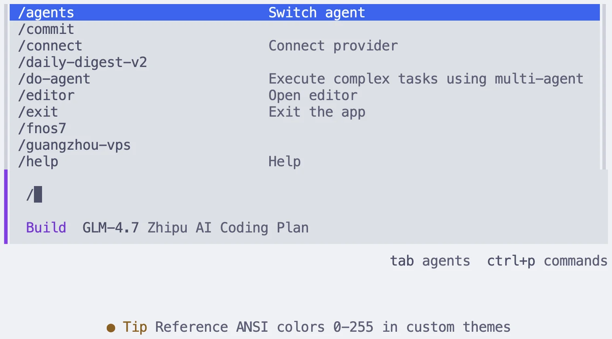
| 命令 | 作用 | 使用场景 |
|---|---|---|
/models |
切换 / 查看可用模型 | 想换模型时 |
/connect |
连接模型服务商，配置 API | 新加一个 API Key 时 |
/skills |
查看已安装的 Skills | 确认 Skills 是否成功安装 |
/sessions |
查看 / 切换历史对话 | 找回之前没做完的任务 |
/init |
初始化当前项目，让 AI 了解项目结构 | 开始一个新研究项目时 |
/new |
新建对话 | 上一个任务做完了，开始新任务 |
/help |
查看所有可用命令 | 忘了某条命令时 |
三种工作模式（重点）
这是 OpenCode 最重要的设计——同一界面，三种模式，按任务类型切换。
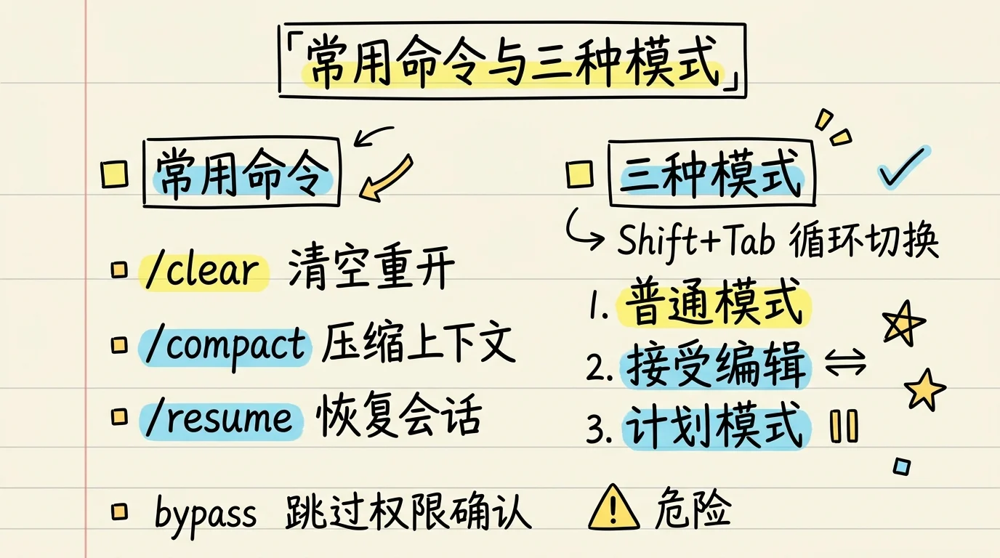
| 模式 | 操作 | AI 的行为 | 什么时候用 | 示例 |
|---|---|---|---|---|
| Ask（问答） | 默认模式 | 只回答问题，不修改任何文件 | 咨询型任务：问概念、查用法、理解代码 | 「DID 的平行趋势假设怎么检验？」 |
| Build（执行） | 在对话框按Tab 切换 |
创建文件、修改代码、执行命令——真正动手 | 日常最常用——实际上你需要 AI 干活的时候就用这个 | 「帮我把这段 Markdown 转成 Word」 |
| Plan（规划） | 在对话框按Tab 切换到 Plan |
先分析方案、列出步骤和风险，不直接动手 | 不确定怎么做的复杂任务，想先看方案再决定 | 「我想用 CHFS 做数字金融与农户收入，你帮我规划一下分析步骤」 |
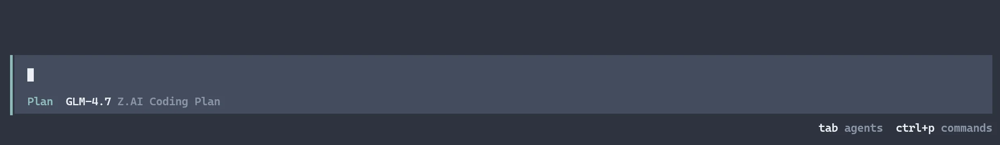
推荐工作流：
- 遇到不确定的任务 → 先切 Plan 看方案 → 确认方案合理 → 切回 Build 执行
- 问简单的概念性问题 → 用默认的 Ask 模式即可
- 需要 AI 动手改文件、跑代码 → 必须用 Build 模式
初学阶段以 Build 为主，80% 的场景都在 Build 下完成。
3.3 Claude Code 配置
Claude Code 是 Anthropic 出品的自主 AI Agent——编程能力业界断层领先。如果说 OpenCode 是你随时可以换模型、用免费模型的「万能瑞士军刀」，Claude Code 就是专门打磨锋利的「武士刀」——在特定任务上极致强大。
API 管理：CC Switch
Claude Code 本身是免费的（CLI 工具），但运行时需要调用模型 API——这需要付费（或使用第三方兼容 API）。推荐用 CC Switch 管理 API 配置：
- 从 github.com/farion1231/cc-switch/releases 下载最新版本
- 打开 CC Switch → 选择 Claude Code → 点击加号添加 API 配置
- 选择服务商（如 DeepSeek、智谱等）→ 填入 API Key → 确定
- 在终端输入
claude，如果正常启动，说明 API 配置生效
首次设置
首次运行 claude 时，系统会引导你完成初始设置：
- 选择主题（深色/浅色）——选你看着舒服的
- 确认使用声明——接受即可
- 选择换行方式——默认
Shift+Enter换行，Enter发送。初学阶段保持默认 - 确认信任当前文件夹——Claude Code 需要有操作文件的权限
完成后，终端左下角会显示当前使用的模型名。一切就绪。
Claude Code vs OpenCode：怎么选？
| 维度 | OpenCode | Claude Code |
|---|---|---|
| 入门门槛 | 低，自带免费模型，打开即用 | 需配置 API 或付费订阅 |
| Skills | 已安装约 15 个，覆盖面广 | 可共用同一套 Skills，安装一次两边都能用 |
| 编程能力 | 中等——日常代码任务够用 | 业界顶尖（SWE-bench Pro 69.2%） |
| 适合场景 | 日常文档处理、课堂演示、轻量编程 | 重量级编程、深度分析、复杂 Agent 工作流 |
| 模型灵活度 | 极高——75+ 模型供应商，随便换 | 较低——主要适配 Anthropic 和兼容 API |
| 费用 | 免费模型完全够日常使用 | 需 API 费用（DeepSeek API 约 1 元 / 百万 token）或 $20/月订阅 |
使用建议
OpenCode 做日常，Claude Code 做重活。
- 改一段 Markdown、转一个 Word 文档、查一个概念 → OpenCode 免费模型
- 跑一套完整的回归分析、做一个复杂的数据清洗、搭建 Agent 工作流 → Claude Code + DeepSeek API
两个都装，按任务切换。它们共用同一套 Skills，没有额外成本。
3.4 安装完成后的第一个测试
完成了以上所有步骤后，做一个端到端的功能验证：
在 VS Code 的终端中（面板），输入以下测试指令：
# 1. 创建一个测试文件
echo "# AI 环境测试" > ~/Desktop/ai-lab/test.md
# 2. 用 pandoc 转换格式
pandoc ~/Desktop/ai-lab/test.md -o ~/Desktop/ai-lab/test.docx
# 3. 查看生成的文件
ls ~/Desktop/ai-lab/如果 test.docx 成功生成，说明从终端 → VS Code → Pandoc 的链条已打通。
在 OpenCode 中测试 Skills：
- 打开 OpenCode（在终端输入
opencode） - 输入：
读取 ~/Desktop/ai-lab/test.md 的内容，并用中文总结 - 观察 AI 是否能正确读取文件并给出总结
如果以上两个测试都通过——恭喜，你的 AI 研究环境已经就绪。
本次课课后任务
完成全部安装：如果在课堂上没有同步装完，课后按本讲义的分步指南继续完成。遇到问题优先查「安装故障排查速查表」。
第一个 AI 对话测试：
- 打开 OpenCode（终端输入
opencode） - 用免费模型完成一次简单对话：「请用 200 字介绍双重差分法（DID）的核心思想」
- 观察回答质量，记录你觉得准确和不准确的地方
- 打开 OpenCode（终端输入
VS Code 工作区练习：
- 在
ai-lab/文件夹下创建一个子文件夹notes/ - 在
notes/中新建一个 Markdown 文件lecture1-notes.md - 把你第一讲的学习笔记（哪怕只有 3-5 个要点）写进去
- 用 VS Code 预览 Markdown（需要安装 Office Viewer 扩展）
- 在
预习：下次课将深入讲解 Skills 的详细用法和 Agent 的创建方法。如果你已经装好了 Skills 扩展包，可以先尝试输入
/skills查看已安装的技能列表，想想每个技能在你自己的研究中可能用在什么地方。
安全提醒
贯穿整个安装和使用过程，牢记以下四个原则：
- 先在练习文件夹测试——不要一上来就打开正式论文或重要数据。AI 改错了还能从练习开始
- 重要文件先 Git 保存——AI 改代码之前，先
git add+git commit。这是你的安全网 - AI 改完必须人工检查——代码能跑不等于结果正确。每一条 AI 做的修改，你都要过眼
- API Key 不要截图发群、不要上传 GitHub——Key 泄露后别人能用你的额度，甚至产生高额账单。一旦泄露，立即在平台后台删除重建